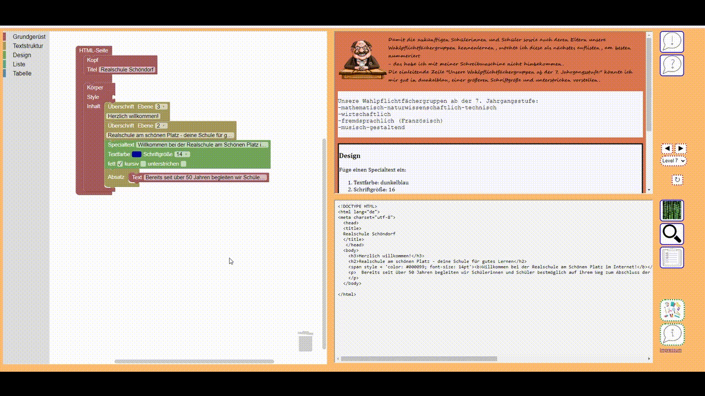

Design
In HTML gibt es viele verschiedene Möglichkeiten die Seite zu gestalten bzw. zu designen.
In dieser Werkstatt findest du erst einmal nur die leichteren Funktionen wie das ändern von Schriftfarbe, Hintergrundfarbe oder Schriftart.
Aber auch damit kann man schon eine Menge Dinge verändern und gestalten.
Der Designblock im Allgemeinen
Das Tool bietet dir die Möglichkeit bei dem Körper- oder dem Divisionblock einen Designblock einzusetzen. Tust du das, wird im Code hinter "style=" eingefügt, was in diesem Block ausgewählt wurde.

Design in Körper und Division
Haben sowohl Körper als auch Division eine Stylevorgabe. Überschreibt die der Division die Vorgabe des Körpers.
Es gilt also immer, was in der Division vorgegeben ist und erst wenn hier nichts steht wird im Körper geschaut.

Weitere Möglichkeiten zu designen
Design im Kopf(head)
Es gibt noch zahlreiche weitere Möglichkeiten seine HTML-Seite zu designen.
Man kann zum Beispiel schon im Kopf ein Design für verschiedene Elemente vorgeben.
Wenn man zum Beispiel möchte, dass Überschriften (h1) immer rot sind und Absätze(p) immer blau während die Hintergrundfarbe hellblau ist, dann sähe das so aus:

Design in einer eigenen CSS-Datei
Möchte man noch mehr Designvorgaben für z.B. bestimmte Bereiche der Seite, oder alle Knöpfe die es auf der Seite gibt machen, so geschieht das in ganzen eigenen Dateien, die auf .css enden.
Man nennt sie deshalb CSS-Dateien. Möchtest du mehr über CSS-Dateien erfahren und wie man sie einbindet, kannst du hier nachlesen.
Auch ein Video in dem CSS erklärt wird findet sich im Link.
Bilder
HTML-Tag < img>
Dieses Tag wird in HTML für die Beschreibung von Bildern verwendet. Anders als beispielsweise bei Word, wird das Bild selbst nicht direkt platziert, sondern es wird aus einer Quelle geladen.
Für dieses Tag sind zwei Attribute erforderlich. Zum einen das Attribut src. Es für die Eingabe der Bildquelle, das angezeigt werden soll, verwendet.
Zum anderen alt, welches einen alternativen Text für das Bild definiert.
Eine Besonderheit beim Einfügen von Bildern ist, dass das Tag < img> ungepaart verwendet wird, und somit kein Endtag notwendig ist.
 |
Zusätzlich kann noch die Breite (width=" ") und die Höhe (height= " ") vorgegeben werden, um das Bild zu skalieren.
Hier ist zu beachten, dass bei den Größenangaben die Bilder nicht verzerrt werden.
Achte auf eine Eingabe ohne Verzerrung!
|